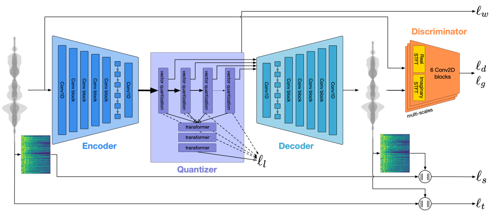
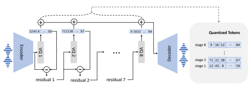
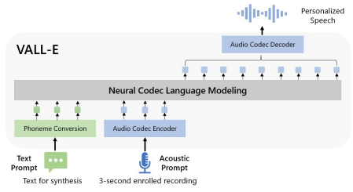

一. EnCodec
1. 模型任务
EnCodec是在SoundStream模型的基础上提出的，用于实现音频数据的高效压缩。其被提出是为了解决音频数据的实时传输，因为要保证数据传输的实时性，所以需要对音频数据进行压缩，同时也要保证被压缩的质量。该工作就是利用神经网络来解决压缩与恢复工作。
2. 模型发展
压缩可以追溯到AE(Auto Encoder)模型，是一个编解码模型，由编码器进行压缩，解码器进行恢复。这是一个自监督模型，它只需要对模型的输入x和模型的输出x`进行损失计算即可。
然而由于AE模型编码器编码出来的向量空间不规整，其无法适用于生成任务，因为解码器并不能识别一个随意的向量。因为为了使编码空间规整，VAE(Variational Auto Encoder)模型被提出。其使编码向量满足正态分布，这样编码器也可以识别正态分布的向量了，进而实现随机生成任务。
但是实验结果表明VAE模型的生成并不理想，进而被认为连续的编码向量不如转换为离散。这种类似选项或者是词汇的输入更符合人类创作的过程。VQ-VAE(Vector Quantised - Variational Auto Encoder)模型使用类似嵌入层(Embedding)的操作让解码器能够识别离散化的向量，该层被称作嵌入空间(embedding space)，在后续文章中被称作码本(codebook)。然而这个离散向量的空间又变成不好采样的了，为了解决这个问题作者训练了一个生成模型学习生成离散样本，进而解决上述问题。使用logit获取离散向量再把它映射成连续向量被认为是很多余的操作，在VQ-VAE模型中使用编码器的输出向量找寻码本中距离最近的向量进行替换，生成离散向量便是如此过程。那么问题又来了，反向传播怎么办？VQ-VAE基于“straight-through”技术使用了sg(stop gradient)运算解决了这个问题，细节不进行研究了。后续该运算也解决了码本训练的问题。
3. 模型结构
模型框架图如下所示，主要由Encoder、Quantizer、Decoder以及Discriminator四部分构成，共计算了6处损失函数。

编码器和解码器的设计基本是镜像的，由1D卷积层、B个卷积块、两层LSTM和最后一个1D卷积层组成。模型支持流式与非流式，只是padding和归一化不同。
量化器是由RVQ(Residual Vector Quantization，残差向量量化)实现的，那么它与VQ-VAE中的VQ有何不同呢？单个码本经原作者计算是远远不够的，这样的话需要多个码本来解决问题，多个quantization block对应多个码本，之间用残差连接，相当于后面的quantization block量化的是前一个的误差，具体细节可在参考文献中了解。该部分还加入了一个较小的语言模型，根据当前时刻的RVQ向量来预测下一个时刻的RVQ向量，从而提前完成语音解码的工作。其加速了解码速度。
模型使用多个判别器来评估解码器恢复的效果，这里用到了GAN模型。
4. 参考文献
知乎：https://zhuanlan.zhihu.com/p/633744455
知乎：https://zhuanlan.zhihu.com/p/672684663
论文链接：https://arxiv.org/pdf/2210.13438
二. VALL-E
1. 模型任务：语音合成大模型
上篇作者认为连续的音频数据经过Encodec压缩后变成了离散的数据，那就可以将这些离散的ID视作一个个token，用大量的语音数据训练出一个语音的“大语言模型”。微软推出的VALL-E和VALL-E-X模型做的就是这样的工作。zero-shot TTS!!!
2. 模型过程
EnCodec由于将语音进行了压缩，重建质量高和压缩程度大，很好地解决了语音和文本在信息密度和长度上的巨大差异。并且Encodec有现成的解码器能够将离散表征转换为声音波形，无需训练额外的声码器。

RQV中生成的离散向量被称为声学词元(acoustic tokens)，与被音素转换模块由文本提示词转换成的因素一同送入模型，预测后续的声学词元，进而被解码器转化为声学波形。

知乎作者给出的结论：VALLE就是使用Encodec的离散表征来做acoustic tokens，堆大数据来做语音领域的大语言模型。
3. 参考文献
知乎：https://zhuanlan.zhihu.com/p/672852107